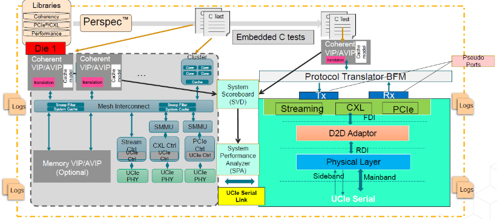
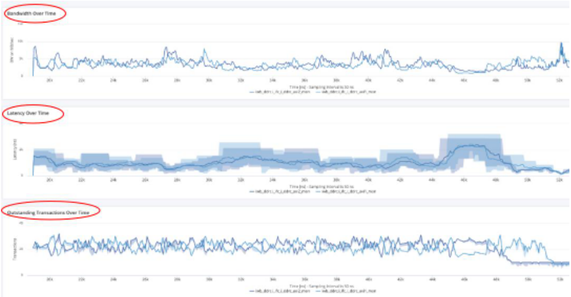
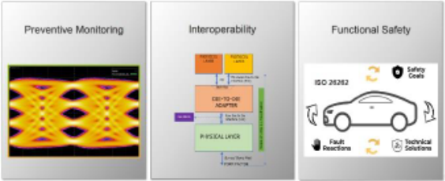
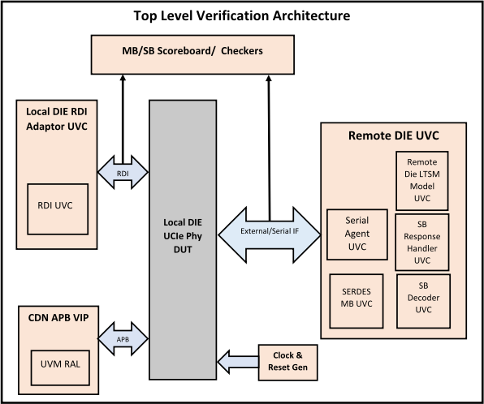
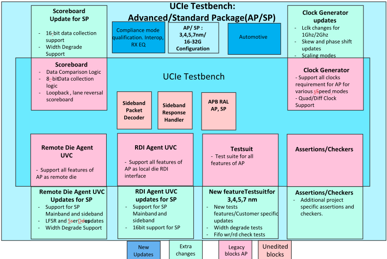
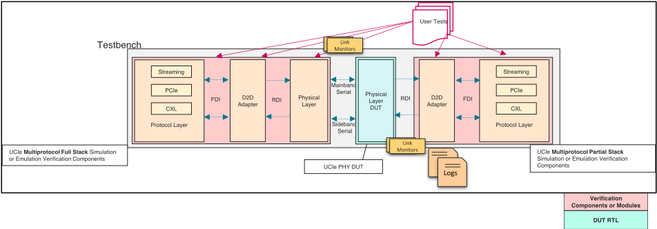
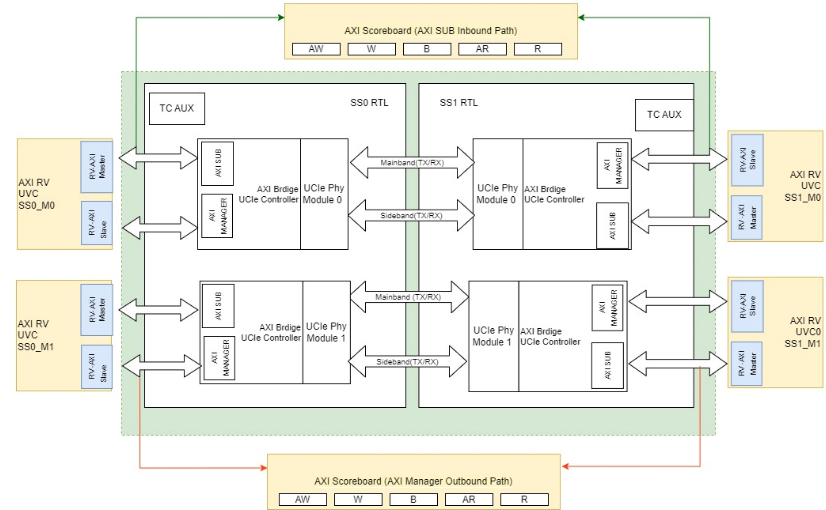
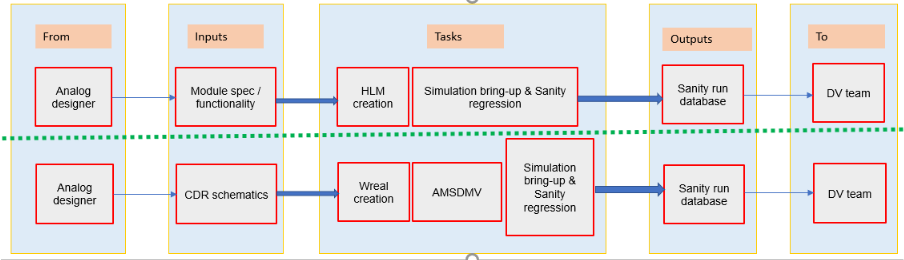
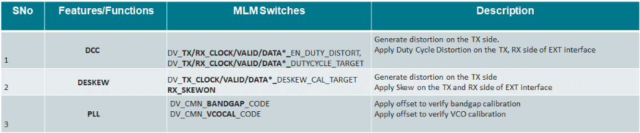

Beyond Boundaries: Overcoming Chiplet Verification Challenges
跨越边界：克服 Chiplet 验证挑战
简介
论文针对 UCIe Die2Die chiplet 的三类验证挑战提出整体验证策略：multi-die 系统级性能与事务完整性验证、UCIe PHY IP 的 automotive 功能安全验证、以及可复用高质量验证环境建设。方法上，用 System Performance Analyzer（SPA）分析 latency/bandwidth/outstanding transactions 定位性能瓶颈，用 D2D scoreboard 保证系统级事务完整性；UCIe 1.1 automotive 的 ASIL 安全机制（CRC on sideband、low-power timeout、parity、link health register eye margin capture 等）在共用 SV-UVM testbench 中通过系统性功能验证与 qualitative direct fault injection 验证 failure mode 与 safety mechanism，safety verification 与 nominal verification 一体架构、以轻量可配置 testcase 最小化 DV 环境改动；环境可配置复用于 IP/subsystem/back2back multi-module 与 Standard/Advanced package，并以 HLM→SV Wreal 模型资格流程和 VCD 方法弥合数模验证鸿沟。关键结论：automotive 验证工作量从 2X 降至 1.3X，新设计环境 bring-up 从约 1.5 个月缩至 2 周，并在 design release 前发现多个设计问题。
问题
UCIe Die2Die chiplet 带来三类验证挑战：(1) multi-die 系统级验证中的性能分析（latency、bandwidth、outstanding transactions 瓶颈定位）与端到端数据/事务完整性检查；(2) UCIe IP 的 automotive 验证——在保证 SNR、data rate 与低 BER 的同时满足 ASIL 功能安全验证要求，且安全验证若不在验证环境开发早期规划将非常耗时；(3) 验证质量与执行效率——如何用可扩展、可配置的共用框架以最小代价验证 IP/subsystem/多种 design topology，并弥合 analog 与 digital 设计验证之间的鸿沟。
方法
三部分方法：(1) 系统级验证：基于 in-house VIP 的性能仿真 setup，使用 System Performance Analyzer（SPA）分析影响 latency 的因素，配合 D2D scoreboard 校验系统级事务完整性，开发的 system-level portable tests 可在多引擎、多 topology 上复用；(2) automotive 安全验证：UCIe 1.1 automotive 增强特性全部在共用 SV-UVM testbench 中验证，对指定 ASIL 要求的安全机制（CRC on sideband、low-power 状态 timeout、high/low priority interrupts、parity、data/valid lane eye margin 信息捕获到 link health register）同时做系统性功能验证与 qualitative direct fault injection 验证以确认 failure mode 与 safety mechanism；Functional Safety verification 与 nominal verification 一体架构，用额外可配置轻量 testcase 实现，最小化 DV 环境改动；(3) 可复用环境与质量：可配置 SV-UVM 环境支持 local/remote Die UVC、LTSM handshake、IP/subsystem/back2back multi-module chiplet 配置及 Standard/Advanced package 复用；通过 testbench 优化、IPROF profiling 与 emulation-friendly analog models 提升执行效率；模拟部分采用 HLM 到 SystemVerilog Wreal 模型的资格认定流程与 VCD-based 方法弥合数模验证鸿沟。
关键结果
automotive 验证工作量从 2X 降至 1.3X
新设计的验证环境 bring-up 时间从约 1.5 个月缩短至 2 周（正文另处表述为新 UCIe 设计环境配置复用从数月级缩短到数周）
通过 testbench 优化与 IPROF profiling 改善了 LTSM 等状态的仿真运行时间（Table 1 按各 LTSM 状态给出优化，但正文未给出具体数值）
在 design release 前发现多个设计问题、更早发现 corner case bugs，避免了新 Chiplet 设计的晚期架构变更（定性结果）
创新点
论文自述验证挑战本身并不新，其新意在于面向 chiplet 提出 holistic 验证框架：将系统级性能/完整性验证、automotive 功能安全验证与高质量可复用环境统一在同一个可配置 SV-UVM setup 中；safety verification 与 nominal verification 一体架构而非事后追加，以轻量可配置 testcase 最小化 DV 环境改动；同一 testbench 覆盖 IP、subsystem（Coherent/Non-Coherent）、back2back multi-module chiplet 及 Standard/Advanced package 多种 topology；另以 HLM→SV Wreal 模型资格流程和 VCD-based 方法弥合数模验证鸿沟。
团队参考意义
相关度级别：high
命中能力域：2.5 功能安全与安全机制 | 2.6 Fault simulation/Z01X/TFMEA
理由：论文主体是 UCie PHY 的功能验证（DV/UVM）方法学，不含 DFT/ATPG、scan、test access 等内容，因此 2.1/2.4 域核心技术未命中（2.4 虽以 UCie PHY 为对象，但论文不涉及其 DFT/ATPG/test access flow）。但第二节直接命中 2.5 域的安全机制验证/safety verification：针对 UCIe 1.1 automotive 的指定 ASIL 要求，在共用 SV-UVM 环境中对 CRC on sideband、low-power timeout、parity、link health register eye margin capture 等安全机制做系统性功能验证与 qualitative direct fault injection，验证 failure mode 与 safety mechanism，并强调 safety verification 与 nominal verification 一体架构——这与团队 2.5 的安全验证职责直接对应；其基于功能验证环境的 direct fault injection 验证 failure mode 与 safety mechanism 的做法，也与 2.6 域的基于功能 stimulus 的 fault injection 与 FuSa 论证关联相符。团队服务 UCie 产品线，论文给出的 UCIe 1.1 automotive 安全特性清单与安全验证组织方式可作为团队 UCie PHY 安全机制验证规划的直接参考。
建议动作：深入精读并做内部分享
中文全文
Beyond Boundaries: Overcoming Chiplet Verification Challenges
总而言之，本文提出的整体化验证方法提供了一种验证解决方案，用以应对芯粒（chiplet）验证在系统级验证、汽车验证以及面向不同设计拓扑的可复用高质量验证环境需求等方面的挑战。
本文所提出的验证策略有助于将验证执行时间降至最低，并在设计发布之前发现了若干设计问题，从而提升了硅片质量。分享该验证策略的实施细节，对于理解验证挑战以及克服这些挑战所采取的方法而言至关重要。
关键词 - UCIe、裸片到裸片（Die-to-Die）、系统级验证、性能
I. ADDRESSING DIE2DIE SYSTEM-LEVEL VERIFICATION CHALLENGES.
构建一套全面的验证环境以克服芯粒（chiplet）系统验证挑战是一项艰巨的任务，尤其是在考虑性能分析和端到端数据完整性检查时更是如此。例如，从发起方（initiator）到目标方（target）的路径可能包含多个步骤，其中存在可能增加未完成事务数量的潜在“节流”（throttle）点。跨芯粒互连的数据包组装与分解可能带来显著的开销。
自研的基于验证IP（VIP）的解决方案通过分析性能瓶颈来应对这些挑战。图1展示了完整的系统性能与完整性检查解决方案。
Solution – Complete System Performance and Integrity Checking

基于系统性能分析器（SPA）搭建的性能仿真环境可分析影响延迟的各项因素。图2提供了有助于理解延迟、事务与带宽（B.W）随时间变化关系的信息。
从图中可以看出，B.W 降低、延迟增加以及未完成事务增多，表明系统因特定的测试激励/事务而过载。启发式方法能够将实际设计性能与理论性能数值进行对比，从而提供深入洞察。随后即可据此根据最终应用对设计进行更新。B.W 利用率降低且链长较短，表明控制器设计未能高效处理传入的请求，需要进行设计分析。


这种系统分析使得瓶颈能够在设计周期的早期被识别并加以研究。
除性能需求之外，该验证环境还用于执行系统级测试，从而确保器件功能的正确性。
II. MEETING AUTOMOTIVE VERIFICATION REQUIREMENTS WITHOUT EXPONENTIALLY INCREASING EFFORT
UCIe 1.1 标准已扩展以涵盖汽车应用。总体而言，汽车设计周期非常长。芯粒（Chiplet）通过支持多颗芯片的组装，为缩短这一漫长的开发周期提供了一种极具吸引力的解决方案。然而，挑战在于如何将无缝的安全验证与芯粒设计的功能验证和性能验证相结合。如果未在验证环境开发的早期阶段加以规划，满足安全验证需求可能会非常耗时。

UCIe 1.1 的汽车增强功能均使用通用的 SV-UVM 验证平台进行验证。汽车特性验证包括：
UCIe PHY IP 的验证设置涵盖了针对指定 ASIL 要求的汽车安全验证。诸如边带上的 CRC、低功耗状态下的超时、高/低优先级中断、奇偶校验、链路健康寄存器中的 data/valid 通道眼图裕量信息捕获等安全特性/机制均为设计的一部分，既用于系统性功能验证，也用于定性的直接故障注入验证，以验证失效模式和安全机制。功能安全验证与标称验证一同进行架构设计，而非事后添加。同一验证设置原样沿用，仅额外增加了用于安全验证的可配置轻量级测试用例。这将设计验证（DV）环境的改动降至最低。
III. ADDRESSING THE COMMON PROBLEM OF IMPROVED EXECUTION EFFICIENCY WITH REUSE AND IMPROVING THE QUALITY OF DELIVERABLES.
这一共性问题对 UCIe 而言颇具挑战性，在制定验证策略时需要仔细考量。第一部分“section a”分享了构建有效设计验证环境与方法论的相关信息，以便以最小的代价无缝支持多项设计需求：
总体而言，验证挑战并不新鲜，因为可配置和可扩展的系统早已被长期使用。然而，Chiplet 设计中有趣的验证挑战在于：如何有效地构建一个通用框架，以可扩展的方式、最小的代价以及面向签核（signoff）的高置信度，将上述所有需求一并加以验证。
第二部分“section b”则展示了一种验证方法，用于弥合模拟验证与数字验证之间的差距。
Section a. 有效的设计验证环境与方法论：最大限度缩短开发时间并提升执行效率。
UCIe 系统带来了新层次的相互依赖关系，进一步增加了验证的复杂性。每个裸片（die）都必须在 IP、子系统以及整个裸片到裸片（D2D）系统层面得到彻底验证。高质量的验证环境是满足不同设计拓扑验证目标的关键使能因素。该验证环境的构建方式使其具备轻松的可配置性，从而能够支持上文列出的所有需求。整个验证环境经过配置和复用，可在几周内用于标准封装或先进封装中的新 UCIe 设计，而无需经历通常需要数月的标准测试平台（testbench）搭建时间。这不仅最大限度地减少了开发工作量，还有助于将调试精力集中于发现设计问题，而非设计验证（DV）环境问题。
图 4 展示了 PHY IP 层级被测设计（Design Under Test, DUT）与验证环境的完整图示。可配置的 DV 环境包含一个本地裸片（local Die），用于表示 Adaptor 通用验证组件（UVC）的功能；而远端 DIE UVC 则完整表示了 PHY IP DUT。其中包含一个串行外部接口 UVC，用于模拟链路训练状态机（LTSM）功能，如 UCI 设计规范中针对初始化启动（initialization bring-up）所列。UVC 中响应处理器（response handler）所内置的智能机制，使其能够按照 LTSM 与 DUT 进行握手。DUT 的其他功能，如解码器（decoder）、串行化（serialization）与解串行化（deserialization），同样在远端 Die UVC 中实现，从而便于对 DUT 进行完整而详尽的验证。

如图 5 所示，该通用验证方法学（UVM）验证环境只需极少改动，即可轻松复用于 UCIe PHY 标准封装（Standard Package）设计版本或新的先进封装（Advanced Package）设计。


可配置的 UCIe 验证设置实现了工作量的优化，并提升了验证生产率。在创建可配置、可复用验证环境的框架时，采用了最佳设计验证实践。验证代码库的很大一部分仅需极少的修改即可复用于设计验证。任何新的更新都可以增量式地加入，对现有设置造成的更新/影响极小。
该验证环境还支持 UCIe PHY IP 和子系统拓扑的验证，如图 6 所示。


除 IP 和子系统（SS）设计验证设置之外，同一通用测试平台还被用于背靠背（back2back）多模块子系统 Chiplet 配置的验证，如图 7 所示。
Mission Mode/Chiplet mode

这种可配置、可扩展的验证策略不仅使验证团队能够将开发工作量降至最低，还减少了整体调试工作量——否则调试将消耗验证周期的大部分时间。除复用之外，团队还仔细考虑了仿真性能（尽量缩短仿真运行时间）。例如，UCIe PHY 独立 IP 的链路训练状态机（LTSM）会占用大量仿真时间。通过测试平台优化以及对延迟的审查，仿真性能得到了提升，如表 1 所示。
| Sno | LTSM state | Simulation Time(%) | Optimization(%) |
|---|---|---|---|
| 1 | SBINIT | ~1us(10%) | ~800ns(10%) |
| 2 | MBINIT | ~1ms(35%) | ~0.9us(35%) |
| 3 | MBTRAIN | ~1.8ms(50%) | ~1.2ms(50%) |
| 4 | LINKINIT | ~600ns(5%) | ~300ns(5%) |
| Overall | 2.96ms(100%) | 2.13ms(100%) |
| Sno | LTSM state | Simulation Time(%) | Optimization(%) |
针对不同的设计拓扑，在测试平台的其他部分也进行了类似的优化。诸如 'IPROF' 之类的仿真工具剖析（profiling）功能进一步有助于提升仿真性能。此外，由于传统 RTL 仿真的仿真时间较长，还开发了一套配备仿真友好型模拟模型的硬件仿真（emulation）解决方案环境，以支持更快速的系统级真实测试。
b 节：克服模拟混合信号设计验证中的差距，以实现高质量的设计签核（signoff）：
UCIe PHY 包含相当大比例的模拟设计部分。最大限度地减少模拟与设计模块之间的差距或功能问题非常重要。
由于仿真运行时间较长，通常的做法是使用模型来表示模拟电路原理图以进行验证。然而，如果模型的质量不完整，设计质量也会不高。
初始验证从高层次行为模型（HLM）开始。随后，随着原理图的开发和设计环境的稳定，会使用更详细的 System Verilog（SV）Wreal 模型。

验证工作遵循下列所列的鉴定流程，并实施质量检查，以保持模拟与数字验证的质量：

| SNo | Features/Functions | MLMSwitches | Description |
|---|---|---|---|
| 1 | DCC | DV_TX/RX_CLOCK/VALID/DATA*_EN_DUTY_DISTORT, DV_TX/RX_CLOCK/VALID/DATA*_DUTYCYCLE_TARGET | Generate distortion on the TX side. Apply Duty Cycle Distortion on the TX, RX side of EXT interface |
| 2 | DESKEW | DV_TX_CLOCK/VALID/DATA*_DESKEW_CAL_TARGET RX_SKEWON | Generate distortion on the TX side Apply Skew on the TX and RX side of EXT interface |
| 3 | PLL | DV_CMN_BANDGAP_CODE DV_CMN_VCOCAL_CODE | Apply offset to verify bandgap calibration Apply offset to verify VCO calibration |
| SNo | Features/Functions | MLMSwitches | Description |
除使用模型之外，还采用了基于 VCD 的方法 [2] 来发现系统级问题，因为系统级的协同仿真既耗时又困难。为弥合模拟与数字设计问题之间的验证差距而采取的各项措施，使得在设计流程中能够更早地发现边角案例（corner case）缺陷。
IV. CONCLUSION AND BENEFITS
芯粒（Chiplet）验证需要一种全新的思维过程。本文提出的稳健且高质量的验证环境，在不增加成本的前提下，通过确保交付物质量和执行质量，满足了芯粒验证的要求。
本文所提出的 UCIe 芯粒验证的主要收益如下：
这避免了在新芯粒设计中出现后期的架构变更。
这最大限度地减少了工作量；例如，汽车验证的工作量降低至 1.3X，而非 2X。通用的可配置测试平台搭建和测试用例也大幅减少了针对单个或多个 PHY 模块或先进/标准封装设计的验证开发工作量。新设计的整体环境搭建时间从约 1.5 个月缩短至 2 周。
对于 LTSM 等设计部分，以及在总体上，借助测试平台、模型、剖析/分析及后续更新，仿真运行时间也得到了改善。
证据核查
1 条证据未在原文中核对到